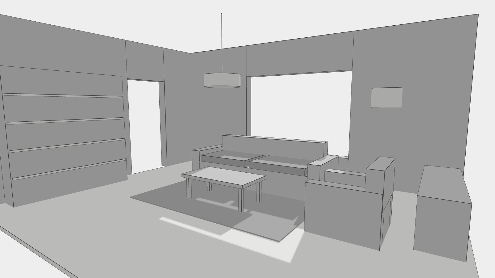
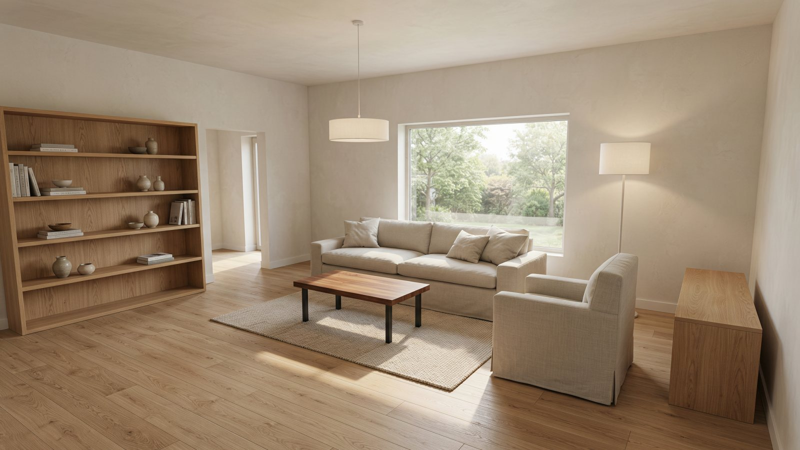
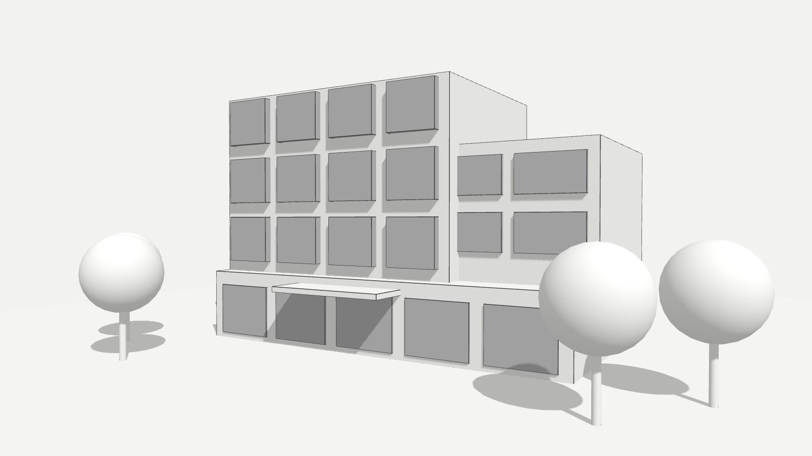
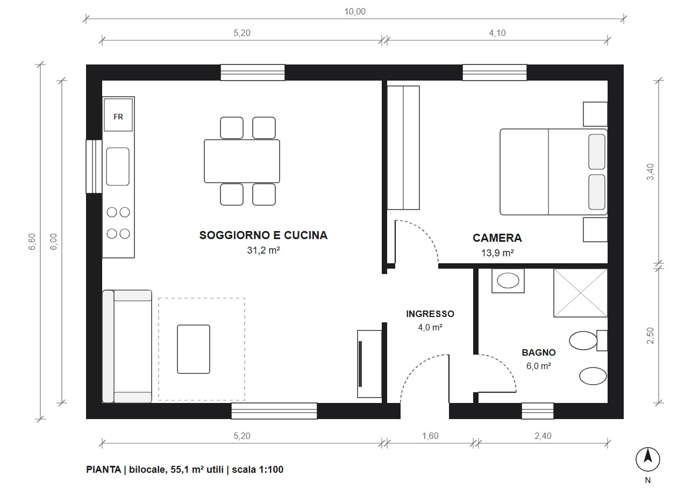
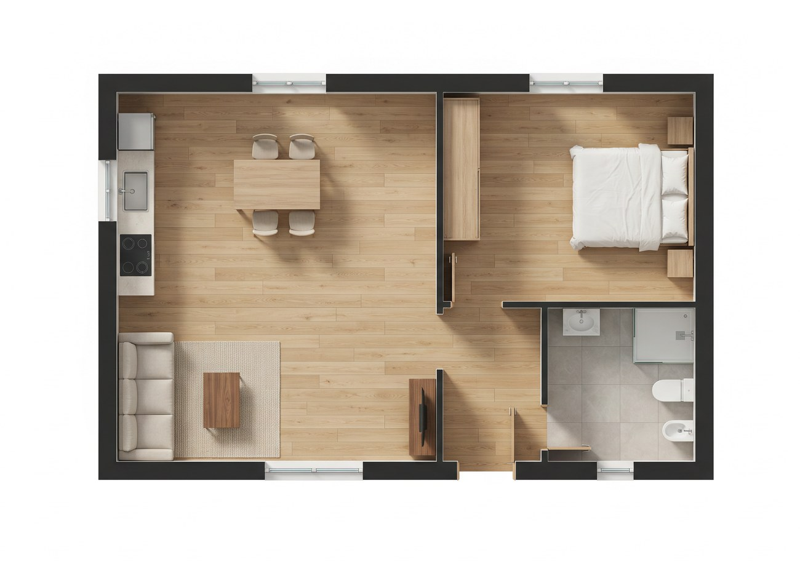

02 | Come funziona
Tre modi di avere un modello.
Chiusi, di frontiera
Noleggio con autista. Il più potente, guidano loro, paghi l'abbonamento. I tuoi dati passano dai loro server.


Aperti, di frontiera
L'auto te la regalano, ma serve un capannone di computer per farla andare. Quasi tutti cinesi.


Locali
L'utilitaria nel tuo box. Gira sul tuo computer, i dati non escono, ma è più lenta e meno brava.

 Nano BananaGPT Image
Nano BananaGPT Image Veo
Veo Seedance
Seedance Kling
KlingIn parole semplici
- Modello chiuso: il produttore non rilascia i "pesi", cioè il file che contiene quello che il modello ha imparato. Lo usi solo tramite le sue app o le sue API (le porte di accesso per i programmi). Oggi: Claude (Anthropic), GPT (OpenAI), Gemini (Google), Grok (xAI).
- Modello aperto (in inglese open weights): i pesi si scaricano liberamente. I più forti sono enormi: servono server costosi, oppure li usi tramite un fornitore. Oggi: Kimi (Moonshot AI), DeepSeek, Qwen (Alibaba), GLM (Zhipu), Mistral (Francia).
- Modello locale: un modello aperto piccolo che gira sul tuo computer con programmi come Ollama o LM Studio. Utile per documenti riservati.
- Specialisti: modelli per immagini (Nano Banana di Google, GPT Image di OpenAI), video (Veo di Google, Seedance di ByteDance, Kling di Kuaishou), 3D.
Loghi da LobeHub Icons (versione 1.106.0), salvati in locale.
02 | Come funziona
L'AI ha anche una geografia.
Costruiscono i modelli chiusi
Quasi tutta la classifica: Anthropic, OpenAI, Google, xAI, Meta.


Regalano i modelli aperti
I migliori modelli scaricabili vengono da laboratori cinesi.
Scrive le regole
Per le regole europee la nuova Siri con l'AI non arriva su iPhone, e l'agente Gemini Spark qui non c'è.
Le regole proteggono i tuoi dati. In cambio, alcune novità le vedi dopo, o non le vedi.
Fonti
- Apple, "Due to DMA, Siri AI delayed in EU for iOS 27 and iPadOS 27", giugno 2026. Il DMA (Digital Markets Act) è la legge europea sui mercati digitali. Su Mac la funzione arriva.
- Gemini Spark, l'agente personale sempre acceso di Google presentato a maggio 2026, è disponibile in oltre 160 Paesi ma non nello Spazio economico europeo, nel Regno Unito e in Svizzera (fonti di stampa, tra cui tecnoandroid.it; Google non ha dato date per l'Europa).
- AI Act: regolamento (UE) 2024/1689. In Italia la legge 132/2025 aggiunge, all'articolo 13, l'obbligo per i professionisti di informare il cliente quando usano sistemi di AI. Informazione generale, non parere legale.
03 | Parlarci bene
Smetti di ripeterti.
Ogni chat nuova
da riscrivere ogni volta
Un progetto, una volta sola
- Istruzioni: chi sei e come scrivi
- Tre email vere che hai scritto tu
- La firma dello studio
ChatGPT Progetti
Claude Progetti
Gemini Gem
Cosa è cambiato
L'idea è sempre la stessa: istruzioni e file che l'AI legge prima di ogni risposta. I GPT personalizzati di ChatGPT sono in ritiro dall'11 dicembre 2026 e passano ai plugin (OpenAI, Custom GPT retirement and migration FAQ); per il lavoro di ogni giorno bastano i Progetti. In Claude ci sono anche le Skill, per i procedimenti che ripeti.
Per un assistente di scrittura carica testi semplici (file .txt o .docx), non PDF scansionati.
05 | Immagini
"Ogni singolo pixel sarà presto generato. Non renderizzato: generato."
 Jensen Huang, fondatore di NVIDIA
Jensen Huang, fondatore di NVIDIA
La citazione
- La frase riassume il pensiero di Jensen Huang sulla grafica generata. Le sue parole documentate: "calcoliamo un pixel, gli altri 32 li deduciamo" (PC Gamer) e, alla CES 2026, il "neural rendering" come futuro della grafica (Tom's Hardware).
05 | Immagini
Dal modello di massima alla foto.


NANO BANANAGenerate an image: turn the attached grey 3D massing model into a photorealistic interior photograph of the same living room. Camera: identical position, height, lens and perspective as the attached image, 24mm, eye level. Materials: warm white lime-plaster walls, wide light oak plank floor, sand linen three-seat sofa with two cushions, walnut coffee table with slim black steel legs, oatmeal wool rug, open oak bookshelf with a few books and ceramics, white fabric drum pendant lamp, matching floor lamp, low oak sideboard. Light: soft late-afternoon daylight from the window, gentle long shadows, natural colours. Style: editorial architectural interior photography. Mandatory: keep every wall, opening and piece of furniture exactly where it is, with the same size, proportions and outline as in the model; same window and door openings; same framing. Forbidden: adding or removing furniture, moving objects, changing the room shape, people, text, logos, watermarks.
Questo prompt non l'ho scritto io. L'ha scritto Claude, con il meta prompt.
Come è fatta
- Il modello grigio è un volume semplice (pareti, finestra, porta, arredi a blocchi), come quelli che si fanno in pochi minuti in SketchUp, Rhino o Revit.
- Immagine generata con Nano Banana nell'app Gemini il 25 novembre 2026, al primo tentativo. Controllo fatto sovrapponendo i contorni del modello alla foto: pareti, finestra, divano e tavolino restano al loro posto.
- Il prompt è in inglese perché i modelli di immagine lo seguono con più precisione. Le due parti che contano sono "Mandatory" (cosa non deve cambiare) e "Forbidden" (cosa non deve aggiungere).
05 | Immagini
Dal volume all'edificio, a Roma, al tramonto.

MODELLONANO BANANAGenerate an image: turn the attached white massing model into a photorealistic architectural photograph of the same building. Camera: identical position, height, lens and perspective as the attached image. Building: a contemporary residential and retail block in a Rome neighbourhood; the base floor becomes shop fronts with dark bronze frames and large glass; the upper volumes become warm travertine-coloured plaster; the recessed grey boxes become deep loggias with glass railings and the darker rectangles become windows with thin bronze frames; the canopy becomes a slim concrete canopy. Context: the round abstract trees become real Mediterranean trees (holm oaks), a paved sidewalk, a few parked bicycles, soft blue sky. Light: golden hour, low warm sun from the right, long soft shadows. Style: editorial architectural photography, natural colours. Mandatory: keep the exact massing, heights, setbacks, number and position of loggias, windows and shop fronts, and the same framing as the model. Forbidden: adding floors or volumes, changing proportions, moving openings, people in the foreground, text, logos, watermarks.
Logge, vetrine e altezze sono rimaste al loro posto: è il prompt a imporlo.
Come è fatta
- Modello bianco a volumi (basamento, due corpi sfalsati, logge, vetrine, pensilina, alberi astratti). Immagine generata con Nano Banana nell'app Gemini il 25 novembre 2026, al primo tentativo.
- Controllo: il 95% dei contorni del modello coincide con quelli della foto. Gli alberi sono diventati lecci veri e il contesto (strada, palazzi vicini) è stato aggiunto, come chiesto.
05 | Immagini
Dalla pianta al render, linea per linea.


NANO BANANAGenerate an image: turn the attached 2D architectural floor plan into a photorealistic top-down render of the same apartment, seen from directly above (orthographic view, no perspective), as if the roof had been removed. Mandatory: keep exactly the same framing, aspect ratio and scale as the attached plan, so the render can be laid over the plan line by line; every wall, door opening, window and piece of furniture stays in exactly the same position, size and orientation. Walls: solid, cut top surface in flat matte charcoal grey, 30 cm external walls, 10 cm partitions. Floors: light oak planks in the living room, kitchen, entrance and bedroom; large light grey stone tiles in the bathroom. Furniture exactly as drawn: linear kitchen along the left wall with fridge at the top, sink under the window and four-burner hob; dining table 140x80 cm with four chairs; three-seat sand linen sofa with its back against the left wall, facing the low TV cabinet on the partition; rectangular walnut coffee table on an oatmeal wool rug; double bed with white linen and two pillows, headboard against the right wall, two bedside tables, sliding-door wardrobe on the left wall of the bedroom; in the bathroom a shower tray in the top-right corner, a washbasin on the top wall, a toilet and a bidet on the right wall. Doors as open light wooden door leaves at the drawn hinge positions. Soft daylight entering from the windows, gentle realistic contact shadows. Outside the apartment: plain pure white background. Forbidden: no text, no room labels, no dimension lines, no north arrow, no title block; no extra furniture, no extra sanitary fixtures, no plants or objects that are not in the plan; do not move, resize or rotate anything; no perspective tilt; no watermark.
Trascina il cursore: è tutto al suo posto.
Come è fatta
- La pianta di partenza è un bilocale di 55,1 m² disegnato in misure reali: muri esterni da 30 cm, tramezzi da 10 cm, porte che aprono verso pareti libere, quote parziali che tornano con i totali.
- Render generato con Nano Banana nell'app Gemini il 26 novembre 2026, al primo tentativo, con il prompt qui accanto (scritto da Claude con il meta prompt).
- Controllo fatto sovrapponendo i contorni della pianta al render: dentro l'appartamento coincide l'85% dei contorni e l'80% della superficie dei muri. Stanza per stanza non ci sono arredi o sanitari in più.
- La vista è dall'alto e senza prospettiva apposta: è l'unico modo per sovrapporre il render alla pianta e controllarlo linea per linea.
06 | Dalla chat agli agenti
Le ultime evoluzioni.
Lavora nel browser e nei file
Gli dai un obiettivo e apre siti, compila moduli, riordina cartelle.
- ChatGPT Work
- Claude Cowork
 Perplexity Computer
Perplexity Computer
Programmi tuoi, descritti a parole
Il gestionale degli iscritti, la ricerca dei contatti e queste slide li ha costruiti un agente, guidato a parole.
 Claude Code
Claude Code Codex
Codex- Lovable
L'assistente che non dorme
Lavora anche quando sei offline. I primi due li installi tu, gratis.
- OpenClaw
 Hermes Agent
Hermes Agent- Dots non in UE
- Muse di Meta non in UE
Dettagli
- Al computer: ChatGPT Work (OpenAI, dal 9 luglio 2026, unisce ChatGPT, agente e Codex); Claude Cowork (Anthropic, da gennaio 2026, unito alla chat dal 16 settembre 2026) con l'estensione Claude in Chrome; Perplexity Computer.
- Su misura: Claude Code (Anthropic) e Codex (OpenAI; da aprile 2026 OpenAI lo presenta come agente "per quasi tutto", non solo per il codice); Lovable per creare siti e app descrivendoli.
- Sempre acceso: OpenClaw, progetto open source nato a novembre 2025 come Clawdbot, con nome attuale da gennaio 2026 (Wikipedia); Hermes Agent di Nous Research, open source da febbraio 2026 (GitHub). Si installano sul proprio computer o su un server e usano il modello che scegli. Dots di OpenAI (dal 29 settembre 2026) non è disponibile per il piano Pro nello Spazio economico europeo, nel Regno Unito e in Svizzera; Muse di Meta non è disponibile in nessun Paese dell'Unione europea (fonti di stampa, novembre 2026).